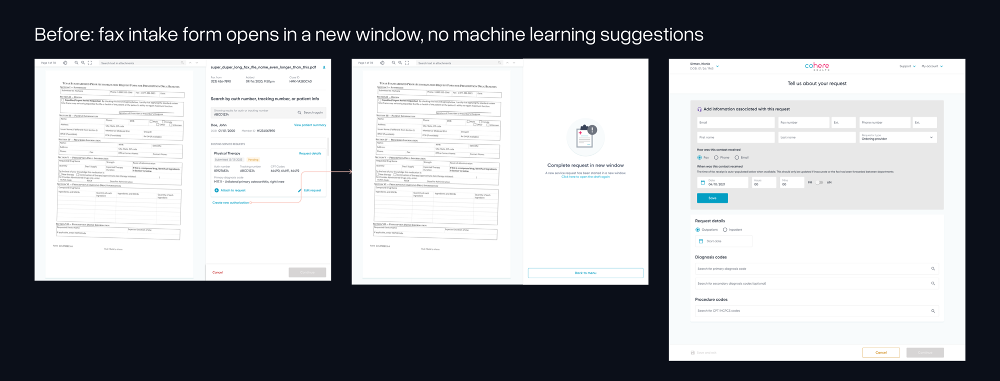
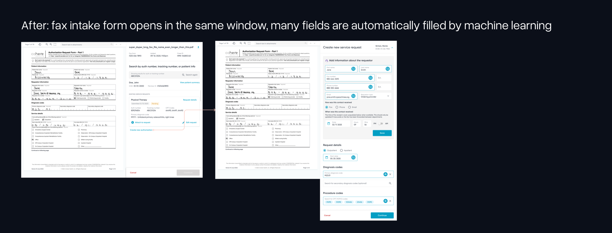
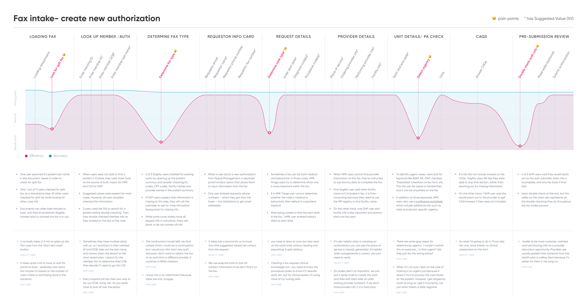

I led the redesign of an ML-powered fax authorization intake co-pilot. Previously, intake specialists had to manually re-key every field from an incoming fax into a form before the data could reach the Cohere portal. I redesigned the flow so the fax document sits on one side and the form on the other, letting specialists work directly against the source while OCR runs in the background — as the model identifies fields on the fax, the matching inputs auto-fill.

Before: the form opened in a new window, disconnected from the fax, with nothing auto-filled.

After: the form opens alongside the fax in the same window, with ML auto-filling the fields it can read.
To ground the redesign and guide ongoing iteration, I ran 11 user interviews alongside a time study. The output was a journey map that product teams across Cohere still reference today.

Journey map from the interviews and time study, still referenced by product teams across Cohere to prioritize new work.